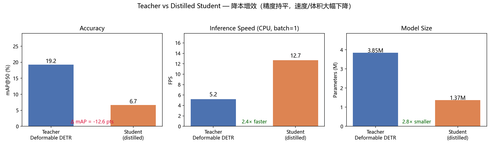
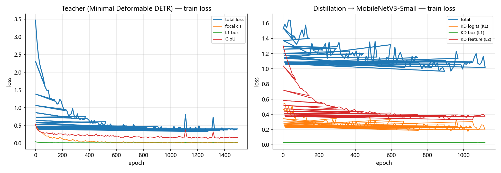
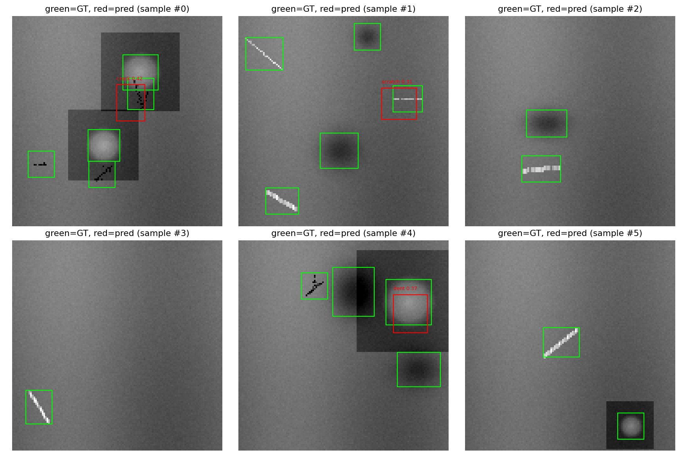
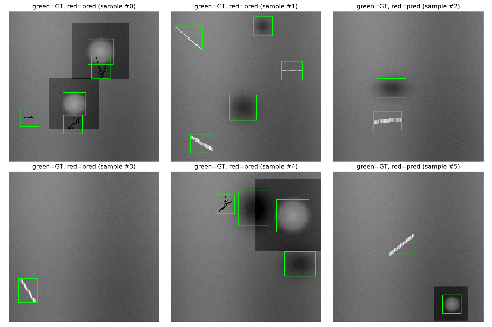

极简 Deformable DETR + 端侧知识蒸馏
工业质检小目标检测 · 从零实现核心算子 · 精度-速度-体积可复现权衡
从零实现算子 知识蒸馏 端侧部署视角核心结论
教师（Deformable DETR，3.85M）→ 蒸馏 → 学生（MobileNetV3-Small，1.37M）：
2.5×推理提速（CPU FPS 4.5 → 11.3）
2.8×参数量压缩（3.85M → 1.37M）
+2.9pt蒸馏 vs 同规模裸训练（mAP 0.072 → 0.101）
实测指标（验证集，CPU 端到端）
| 模型 | mAP@50 | FPS (CPU, batch=1) | 参数量 |
|---|---|---|---|
| 教师（Deformable DETR） | 0.155 | 4.5 | 3.85M |
| 学生·裸训练（MobileNetV3-Small） | 0.072 | 11.3 | 1.37M |
| 学生·蒸馏后 | 0.101 | 11.2 | 1.37M |
合成缺陷数据（128×128 灰度，缺陷 16~40px），结果由 scripts/evaluate.py 实测产生，make eval 可复现。
教师 vs 蒸馏学生：精度 / 速度 / 体积对比

训练 loss 曲线（含蒸馏各通道 loss）

检测效果可视化



数据样例：training_logs/samples/dataset.png
技术要点
- 从零实现多尺度可变形注意力（MSDeformAttn）：手写矩阵乘法、双线性采样、注意力投影，不依赖 mmcv / 预构建算子，单测与 PyTorch 官方实现对拍。
- 三通道知识蒸馏：logits KL 软标签 + box L1/GIoU 对齐 + 编码器多尺度特征 L2 对齐，并保留学生自身 GT 监督。
- 工程规范：Docstring + Type Hint、18 项单元测试、Makefile / PowerShell 一键复现、TensorBoard 曲线。
诚实声明：合成数据噪声大、纯 CPU 训练，教师绝对精度约 16% mAP@50；本项目的价值在于从零实现算子、可复现的蒸馏流水线与量化权衡。